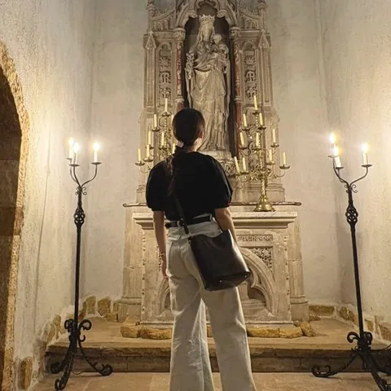
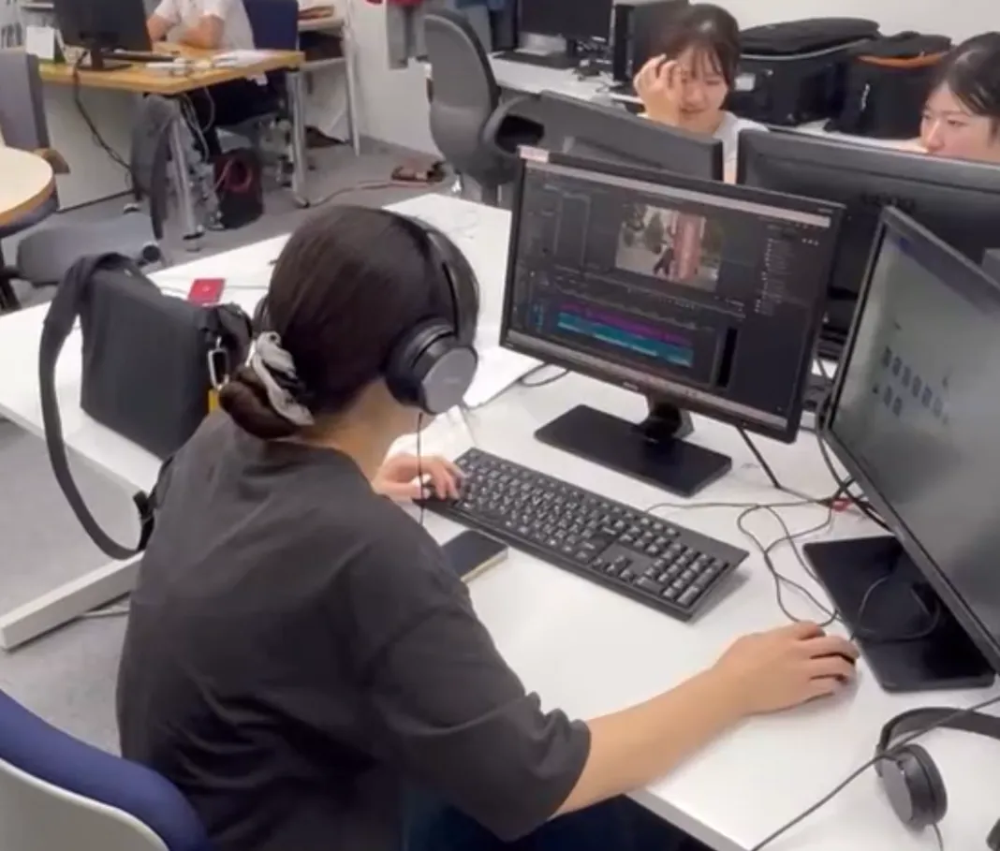
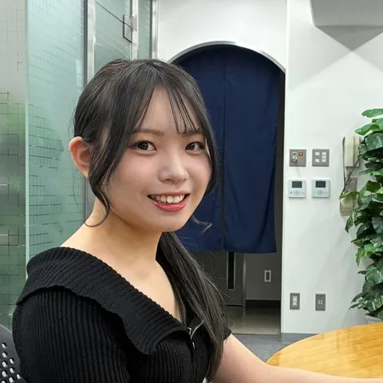
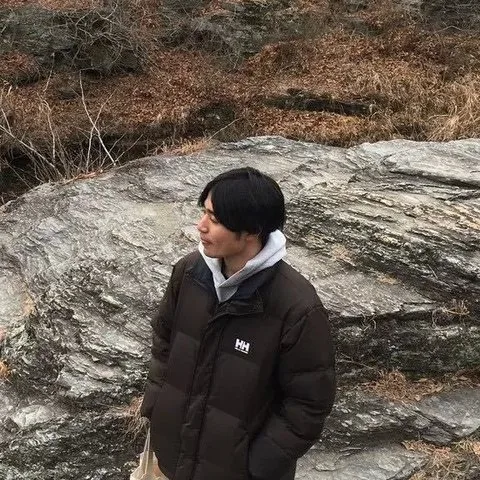
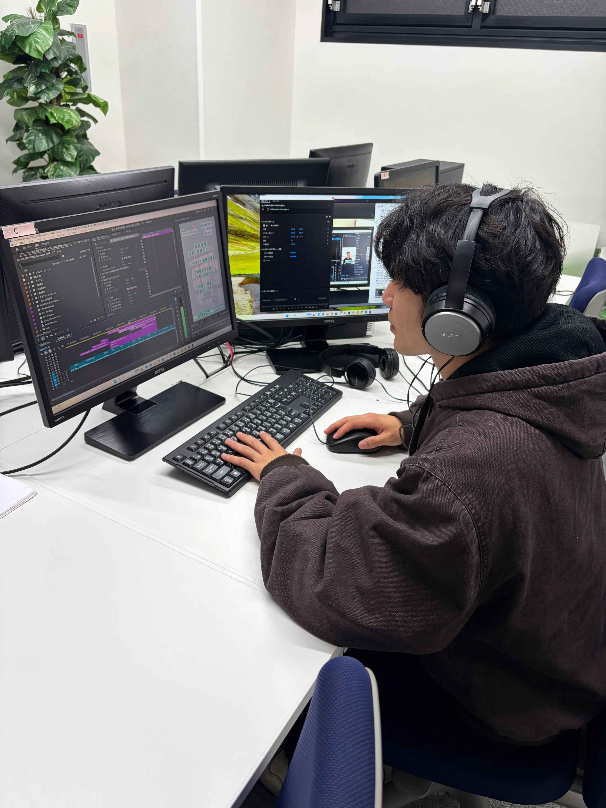
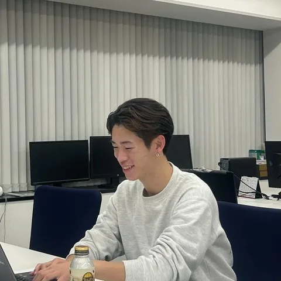
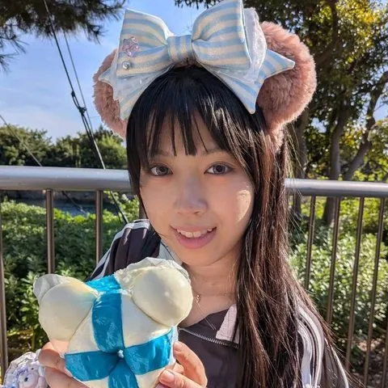
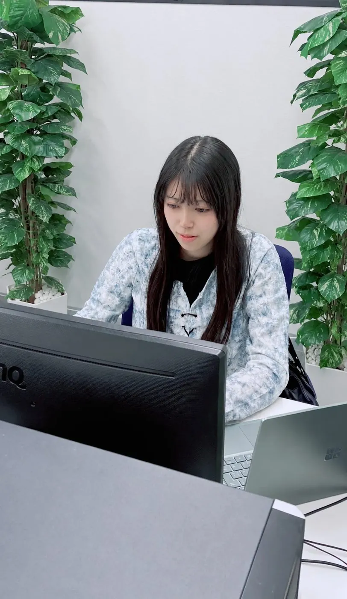
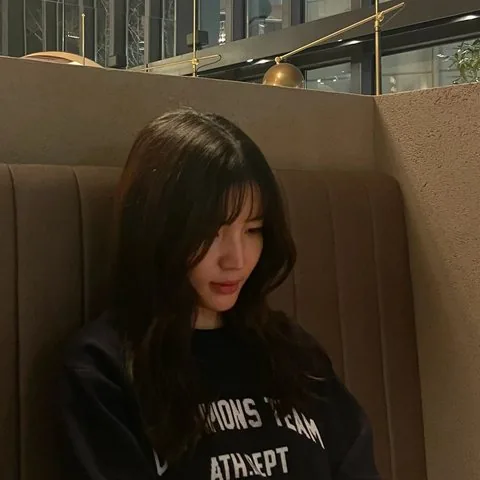

ナガセ広報研究所 慶應三田オフィス
動画・マンガ・SNS…「伝える力」を、
現場で本気で身につける長期インターン
動画編集、取材、打ち合わせ…。学生が主体になって動く、オフィスの日常です。
歓迎会やBBQ、ご飯会など、仕事の外でも仲間と楽しく交流しています。
※お問い合わせは慶應三田オフィス 03-5738-1111 まで
広報研究所 慶應三田オフィスは今年で開設9年目を迎え、東進ハイスクール・東進衛星予備校の公式YouTubeチャンネル東進TVに投稿する大学紹介動画の企画・撮影・編集、広報物（マンガ、ハガキ等）の制作、悩み相談サイトの運営など、幅広い活動をしています。
ここで働く学生は全員が現役慶應義塾大学生で、学業やサークルと両立しながら業務に取り組んでいます。一人で悩むのではなく、仲間と一緒に考え、試行錯誤しながら成長できる環境があるため、未経験からでもぐんぐんスキルを伸ばせます。
編集力・企画力を身に着けたい方やマネジメントスキルを伸ばしたい方、同じ慶應生の仲間とともに実践的な経験を積みたい方に最適な環境です。経験の有無は問いません。皆さんのご応募を心よりお待ちしています！
Instagram、Xのフォローもお願いします！！
採用情報の詳細はこちら！
動画やマンガ、SNSなど、多彩なコンテンツを通して、大学の魅力や学生のリアルを発信しています。
撮影先の選定や大学とのZoomでの打ち合わせ、動画案や撮影台本の作成といった企画段階から一貫して担当します。
大学とのやり取りを通してコミュニケーション力が身に付くほか、企画力や構成力も磨かれます。撮影では学生3名ほどで大学を訪問し、教授や学生へのインタビューや動画に使用するインサートカットの撮影を実施。相手の魅力を引き出す質問力が得られるだけでなく、さまざまな大学を訪問してそれぞれの特色や魅力を発見できるのも楽しみの一つです。編集では動画の構成や素材の並べ替え、テロップの挿入などを行います。映像編集の技術はもちろん、視聴者に伝わりやすい動画を制作するための構成力や表現力も伸ばせます。編集経験が無くても研修制度が充実しているので大歓迎です！
高校生に向け、現役大学生へのインタビューを通じたショート動画の企画・制作を行っています。
「高校時代に何を頑張り、どんな経験をしたのか」という一人ひとりのストーリーを引き出し、「自分も頑張ってみよう」と思える動画を届けることが私たちの目的です。企画から取材、編集、分析までを学生主体で担い、年間100本・累計1,000万再生を目指して挑戦しています。充実した研修制度を整えているため、未経験の方でも大歓迎です。制作ではPremiere Pro等の本格的なソフトを使用し、実践的な動画編集スキルを身につけることができます。視聴者目線に立つことでマーケティング能力が養われるだけでなく、細部までこだわる中で集中力や完遂力も高められます。
全国の高校生に届けるマンガの企画・プロデュースを行っています。
学年ニーズに応じたコンセプトやキャラクター設定、ストーリー展開を自分たちで企画・立案し、実際の作画やデザインは外部の制作会社へ依頼して1冊のマンガを作り上げています。自分たちのアイデアを形にできる点が大きな魅力です。また、制作会社とのやり取りを通したビジネスマナーの習得に加え、企画の過程で読者の心を動かす構成力や分析力も養うことができます。
各家庭へ届く東進の特別招待講習のハガキを制作します。
対象時期や学年に合わせたターゲット層の分析・設定から、キャッチコピーの考案、デザイン作成、掲載する講座や合格体験記の選定まで一貫して担当し、1枚のハガキを企画から完成まで作り上げていきます。
高校生の心に響くキャッチコピーを考える力が身につくほか、実際のハガキ制作を通してデザイン力や構成力も養うことができます。
全国の中高生から届いたお悩みの解決を目指します。
寄せられた質問の中から回答するテーマを選び、専門家や著名人へのアポ取りから取材、記事の執筆・公開まで一貫して担当します。悩んでいる誰かの力になれることが大きなやりがいです。専門家や著名人とのやり取りを通して礼節やビジネスマナーが身につくほか、取材を通じて自分にはなかった新たな知識や視点を得ることができます。ぜひサムネイルのボタンからサイトをチェックしてみてください！
実際に働く先輩に、リアルな話を聞きました

自宅に届いた募集ハガキをきっかけに参加した見学会で、元々関心のあった動画編集の仕事にとても惹かれました。また、働くメンバーが全員慶應生なので「ここなら周りとすぐに馴染めそう」という安心感があったことも大きな決め手です。大学の講義やサークルと無理なく両立しながら成長できる環境だと感じて選びました。
東進TVの大学紹介動画の編集を行っています！どうすれば高校生に興味を持ってもらえるか、最後まで楽しく見てもらえるかなどを考えながら、動画全体の構成から、テロップやインサートの入れ方といった細部まで、こだわりながら編集を進めています。

編集を進めていくにつれて、徐々に完成形へと近づいていく様を見るとやりがいを感じます。
試験前は短時間、長期休みは長時間というように、自分の予定に合わせてシフトを調節しています！シフトの融通が効くのもこのオフィスのいい所だと感じているので、勉強、サークル、バイトのどれも頑張りたい人には特におすすめです！

「大学生活で何かに挑戦したい」と思い参加した見学会で、先輩方が仕事内容を丁寧に教えるだけでなく、履修相談にも親身に乗ってくださいました。その温かな雰囲気に惹かれ、ここで働くと決めました。大学からのアクセスの良さや、授業に合わせて無理なく働けるフレックス制である点も大きな魅力です。


穏やかでアットホームな雰囲気です！分からないことがあれば、社員さんや先輩、同期にすぐ質問できます。社員さんも親身にサポートしてくださるため、安心して業務に取り組めます。
歓迎会やBBQ、ご飯会など年に数回開催されていて、プライベートでも楽しく交流しています。

東進公式のYouTubeに投稿するショート動画の編集に携わっています。ただ指示通りに動画を編集するだけでなく、チームでどうすればより沢山の人に届くショート動画を作れるか分析するのも仕事です！自分たちで1から考えるのですごくやりがいがあります！

職場の雰囲気に良い意味でギャップがありました！ 入る前はインターンと聞いて固いイメージを持っていましたが、実際に働いてみるとみんな仲が良く、メリハリのついた楽しい職場だなと感じました！
たくさんあります！最近はBBQやボウリング、カラオケなどに行きました！

東進TVで公開する大学紹介動画の制作をチームで担当しています。企画構成案の作成、大学の先生方との日程調整や事前連絡、そして撮影まで、公開に至る流れを一通り任されています。撮影当日は、カメラマンとして先生や学生へのインタビューを撮影したり、補足映像など編集で必要になる画を撮影したりしています。最近は撮影者の育成やチーム運営の仕組みづくりにも取り組んでいます。

狙っていた画がぴたりと撮れた瞬間です。研究中の先生の手元や研究室の空気感など、撮り直しがきかない一瞬を構図や光を工夫して一発で決められた時の達成感は格別です。自分の撮った画が編集で採用されるのも嬉しく、趣味のカメラが仕事として誰かの役に立っている面白さを実感します。
複数大学の動画制作を企画から素材選定まで一貫して形にしてきたことです。またNotionを活用して進行状況を見える化する仕組みの導入や当番制の体制づくりを行い、自分がいなくても回るチーム体制にすることに力を入れています。独立して撮影できるメンバーを増やす育成にも注力しています。
大学の先生や広報担当の方と直接やり取りし、本物の取材現場に立てることです。作品が東進TVで公開されるため責任感と達成感があります。撮影だけでなく企画、台本作成、編集、チーム運営まで全体に関われ、学生主体で意見が通りやすく、自ら考えて動いた分だけ成長できる環境です。

大学に入学して、バイトを探しているときにインスタの投稿を見て、動画制作の経験をしてみたいと思い応募しました。慶應生限定という点でも仲良くなりやすそうだという安心感がありました。
思っていた以上に仕事内容が本格的だったことにギャップを感じました。 動画編集以外にも企画考案や取材打ち合わせなど、コミュニケーション能力が必要な業務も多くあります。大変さはありますが、社会で絶対に必要な能力を実践で経験できて良かったと思っています。

皆さん優しく、バイト経験がなくても楽しく仕事ができます。自分の予定に合わせて、比較的柔軟にシフトが組めるので助かっています。同じ学部の先輩に仕事以外のことでも相談したり、退勤後に一緒にご飯を食べに行ったりしてとても充実しています！

2年生の早い段階からリーダーを任される機会が多く、チームでプロジェクトを動かした経験や困難を乗り越えたエピソードは就活の大きな強みになりました。また、半年に一度ある先輩や社員の方との面談は、自身の長所や次の目標を確認し、客観的に自分を振り返る自己分析の場として非常に役立ちました。

周囲を巻き込んでプロジェクトを動かした瞬間です。最初は一人でやり遂げることが良いと思っていたのですが、先輩からアドバイスを頂いて、先輩や後輩に自発的に協力を求めるようになってから、チームでスムーズに仕事を進められるようになり、自身の成長を実感しました。
社会で必要となる実践的なスキルを磨きながら、自分自身も成長して働ける点です。外部の方とのやり取りを通じたビジネスマナーはもちろん、自ら企画を考えリーダーとして推進するなど、通常のアルバイトでは得難い経験をしながらお給料をいただける環境は、このオフィスならではの魅力だと思います。
右も左も分からないまま見学会に参加し飛び込みましたが、振り返ると「あの時決断して本当に良かった」と心から思っています。大学生活や就活の相談もできる温かいコミュニティであり、自分を大きく成長させてくれる機会に溢れています。ぜひオフィスに入って、最高に充実した4年間を過ごしてください！
エントリーフォームにて希望面接日時をお選びいただきます。お申し込み後、担当者から面接日時に関するメールを差し上げます。
慶應三田オフィスにて面接を行います。所要時間は1〜2時間程度です。
指定の期間内にオンラインで事前研修・テストを受けていただきます。詳細については面接合格後に個別にメールを差し上げます。
ナガセ広報研究所慶應三田オフィスでの勤務スタートです！充実の研修制度が整っているので未経験でも安心です。
学部によって授業の入り方が異なるため、各学部の1年生の時間割に合わせた例をご紹介します（あくまで一例です）。